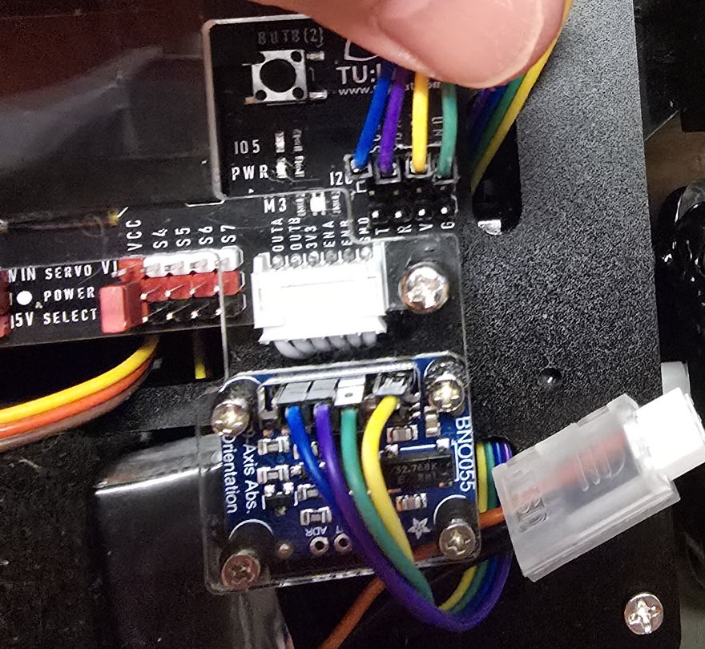

組裝順序
| 章節 | 重點 | 官方文件 |
|---|---|---|
| step1 下板與馬達 | 撕掉壓克力兩面保護膜（一面霧面、一面亮面）；用馬達支架長螺絲固定馬達，再用短螺絲把馬達鎖在下板，馬達要與下板邊緣貼齊平行。 | |
| step2 上下板內部 | 馬達線交叉的一端插入馬達；裝超音波支架（MTC 字樣朝外），超音波針腳向上彎 90°；電池用束帶固定，禁止用尖銳物割電池或破壞熱縮膜。 | |
| step3 上下板與控制板 | 水平雲台伺服馬達：軸心與旁邊孔洞在同一邊；馬達線 1–4、電源線、超音波杜邦線依顏色框從上板對應孔穿出；接馬達口、超音波、伺服跳帽。 | |
| step4 雲台校正與輪子 | 輪子排成 X 型、M2.5×25 螺絲加墊片（禁止電動工具）；用程式把伺服轉到 90° 再裝十字舵盤；轉盤箭頭朝前。 |
影片：MTC V2 YouTube 組裝影片｜全部文件：MTC 機器人套件組裝說明
直流／編碼器馬達
依官方 step3 說明，四條馬達線從上板穿出的位置如下（俯視、超音波在車頭）。穿線後把馬達線插到控制板四角的馬達接口，注意控制板擺放方向不要接錯。
官方接線圖：直流馬達與編碼器馬達


單顆馬達的接法與速度
- OUTA → 馬達正極、OUTB → 馬達負極（官方講義 05）。
- 馬達速度範圍
-255 ~ 255，正負代表方向；輸入超過範圍則不轉動。 - 速度是用 PWM（脈衝寬度調變）控制：通電時間比例越高，等效電壓越高、轉越快。
編碼器 CPR 怎麼算
編碼器每 1 個脈衝會產生 4 個計數，所以：
CPR（每轉計數）= 4 × PPR × 齒輪比
例：13 PPR 編碼器＋1:90 減速馬達 → 4 × 13 × 90 = 4680也就是輪子轉一圈，編碼器讀到 4680。要讓馬達轉到指定角度，就用「目標角度 ÷ 360 × CPR」換算計數值。
麥克納姆輪 X 型
- 四顆輪子的輥子方向必須排列成 X 型（官方 step4），排錯會無法橫移。
- 先把馬達聯軸器套到 4 個馬達上，再用 M2.5×25 螺絲與墊片固定輪子，這一步禁止使用電動工具。
官方《MTC 麥克納姆輪控制單元》用 MA～MD 四顆馬達直接給速度，馬達順時針轉為正、逆時針為負。左右兩側馬達是鏡像安裝，所以「前進」時左右兩側的數值正負相反：
| 動作（官方講義數值） | MA | MB | MC | MD | 車輪實際方向 |
|---|---|---|---|---|---|
| 前進 | −250 | −250 | 250 | 250 | 四輪都往前 |
| 向右平移 | −250 | 250 | 250 | −250 | 左前、右後往前；右前、左後往後 |
| 原地右轉 | −250 | −250 | −250 | −250 | 左側往前、右側往後 |
| 往右前斜移 | −250 | 0 | 250 | 0 | 只有左前、右後往前 |
把這四組數值代回去推算，MA＝左前、MB＝左後、MC＝右後、MD＝右前，正好對應上圖的馬達線 1、2、3、4。後退、左移、左轉只要把數值全部乘 −1。實際寫程式時建議用 MTC V2 擴充的「X、Y、旋轉」積木，積木會自動換算四輪速度（見 程式範例）。
伺服馬達與 VIN 跳帽
三條線
- 棕色
- GND（−）
- 紅色
- VCC（＋）
- 橘色
- PWM 訊號
PWM 週期 20 ms，脈寬約 1 ms → 0°、1.5 ms → 90°、2 ms → 180°（官方講義 06）。
伺服腳位排列
S0 S1 S2 S3 VCC VCC S4 S5 S6 S7
SERVO POWER SELECT 跳帽：5V 或 VIN
MTC 套件的伺服馬達由 7.4 V 電池供電，請把跳帽從 5V 切到 VIN（官方 step3 步驟九）。


各套件伺服腳位（官方範例預設）
| 套件 | 水平旋轉 | 上下／仰角 | 夾爪／發射 | 初始化積木 |
|---|---|---|---|---|
| 水平雲台（底盤） | S0 | — | — | 校正程式：S0 轉到 90° |
| 手臂 ATARM | S0 | S7 | S6（夾爪） | 手臂初始化 旋轉 S0、升降 S7、夾爪 S6 |
| 乒乓球發射器 PPGUN | S0 | S1 | S2（發射） | 發射器初始化 旋轉 S0、上下 S1、發射 S2 |
依據：官方範例 00.手臂校正程式.tb、夾爪機器人_ps3搖桿.tb、射擊機器人_ps3搖桿.tb、MTC_V2_伺服馬達校正.tb。
ATARM.h 與 PPGUN.h 函式庫有同名變數（panPin、panDeg），同時 include 會編譯失敗（2026/10/03 以兔比積木 Arduino IDE 實測）。比賽規則本來就是一台手臂車、一台發射車，各自燒錄自己的程式即可。超音波接線（MTC V2 官方配置）


BNO055 角度感測器：I2C 接線

- 斷電後再插拔杜邦線。
- 先接電源兩條：VIN → V、GND → G，再接 SDA、SCL。
- 上電前請同學互相檢查一次；上電後若感測器發燙或有焦味，立刻拔電。
- 燒錄 BNO055 範例，用 OLED 或序列埠看
orientationZ，手轉動車子角度會跟著變就代表接對。
IR 靠牆校正：紅外線感測器接線
「紅外線 IR 對牆校正」擴充用 6 顆紅外線感測器量車身與牆面的距離，自動把車子擺正、貼齊牆面。新版積木的初始化與腳位如下（依官方課程「紅外線感測器」簡報）：
| 位置 | GPIO | 程式內名稱 |
|---|---|---|
| 前 | 33 | UP |
| 後 | 32 | BK |
| 左前 | 35 | LU |
| 左後 | 34 | LB |
| 右前 | 39 | RU |
| 右後 | 36 | RB |
電源與上電檢查
- 接上電源線，把開關切到 ON。
- 檢查 4 顆馬達是否正常轉動，馬達轉動時控制板上對應的指示燈會亮。
- 確認沒問題後關閉電源、拔掉電源線，再用 M3×10 螺絲把上下板鎖在一起。
- 裝透明保護板時注意：板子上預留了開關與 I2C 接腳的缺口，不要放反。
雲台校正（step4）
- 燒錄官方 校正程式（S0 轉到 90°）。
- 上電確認伺服轉到定位。不確定時：關電 → 手動輕轉伺服 → 再上電，看是否回到同一角度。
- 裝上十字舵盤。伺服齒輪為 25 齒，對不齊時把舵盤換個方向再裝。
- 用 M3×10 螺絲鎖上水平轉盤，轉盤箭頭要指向車頭。
快拆模組（ATA_QRC，適用水平雲台 4.2）
- 用 3 顆 M3×8 螺絲把快拆底座固定在水平雲台上。
- 用 3 顆 M3×8 螺絲把快拆模組固定在夾爪底座下方（乒乓球發射器也是同樣鎖法）。
- 由最前端對齊往後卡入，兩片之間要密合；有縫隙就重新對齊卡緊。
- 拆下時：雙手食指把卡扣往上推，再用拇指把模組往前推出。
依據：資料夾內 2026快拆說明.pdf；官方快拆模組雲端。
乒乓球發射器（PP_GUN 3.x）校正
- 先讓發射伺服（S2）轉到 0°，把尺條推到最底，確認在 0° 後再鎖上舵盤。
- 更換 C 型環時，把伺服轉到 138～140°，依自己的組裝微調。
- 發射動作：S2 轉到 0° 推出乒乓球，等待約 1 秒，再轉回 110°（尺條拉出的正常位置）。
發射器3.1_校正範例程式.tb 按 B 會把 S2 轉到 150°，與這項提醒不一致，建議改成 138～140° 再使用。依據：資料夾內 PP_GUN(3.0.0) 組裝說明.pdf；官方 乒乓球發射器套件控制 2026。